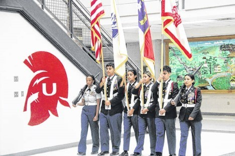

Honors & AP courses
Advanced learning opportunities available across our schools.
Union High School · Rose Hill, NC
United we tell our story: A new generation, united by traditions, we are Union.
1189 Kader Merritt Road Rose Hill, North Carolina
A new generation.
United by traditions.
Learning at Union
Learning, school life, and your plans after high school.
Find official academic information and resources to help you take the next step.
Explore learningExplore the school’s official updates for ways to connect, participate, and get involved.
Explore school lifeStart a conversation about your goals and find guidance through official school resources.
Look aheadStudents, families & community
Find the information you need for school life, family connections, and staying involved with Union.
Find ClassLink, NCEDCloud, dining, tech help, and student records in the resource directory. The official school website connects you to each service.
Browse student resourcesAcross Sampson County Schools
District-wide opportunities and community.
Advanced learning opportunities available across our schools.
Career exploration to help students discover their interests and next steps.
Spoken among students and families in Sampson County Schools.
Sampson County Schools is the second largest employer in Sampson County.
The Union bulletin
Selected articles checked against the official UHS feed on November 3, 2026. Older stories are labeled with their original dates.

Student spotlight · Oct 3, 2025Six UHS cadets were featured in the school’s announcement about presenting the nation’s colors before the Panthers–Dolphins game on October 5, 2025.
Read the school’s articleThe school’s published guidance for students and families on cell phone use during instructional time. Refer to the official site for the latest policy.
Read the school’s articleThe district’s job fair notice describes an event held July 17, 2025. The article remains in the school feed; it is included here as an archived announcement.
Read the school’s articleYour school toolkit
Direct links from the official UHS website. School services open in a new tab.
School calendar
November–December 2026 · Checked against the official school calendar on November 3, 2026. All times Eastern. Confirm changes with the school.
All day
4:30 PM – 9:00 PM ET
4:30 PM – 9:00 PM ET
4:30 PM – 9:00 PM ET
4:30 PM – 9:00 PM ET
4:30 PM – 9:00 PM ET
All day
8:00 AM – 3:00 PM ET
4:30 PM – 9:00 PM ET
4:30 PM – 9:00 PM ET
4:30 PM – 9:00 PM ET
All day
4:30 PM – 9:00 PM ET
3:00 PM – 9:30 PM ET
4:30 PM – 9:30 PM ET
Showing all 15 events
Stay connected
For current announcements, upcoming events, and school contacts,
head to the official Union High School website.
Visit or call
Phone: 910-532-6300
Fax: 910-532-6350
Someone is here to listen
Call 988 for the Suicide and Crisis Lifeline, or text HOME to 741741.
NC Peer Warmline: 855-733-7762.
Para comunicarse con la Línea de Prevención del Suicidio y Crisis, llame al 988 o envíe HOME al 741741. Línea de Apoyo entre Pares de Carolina del Norte: 855-733-7762.